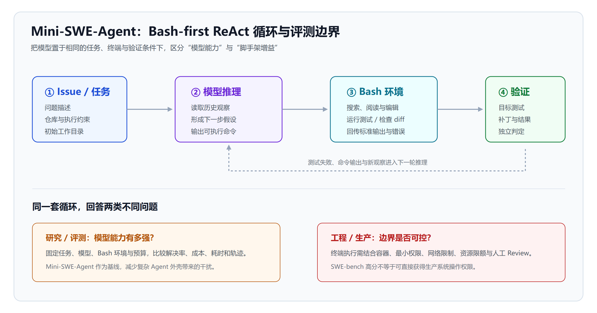

拆解 Mini-SWE-Agent：一个 Bash-first ReAct 循环，如何成为代码模型评测底座
当 Claude Code、Codex、Cursor 和 OpenHands 都在把工具、子 Agent、规则、记忆与云端协作塞进产品时，Mini-SWE-Agent 反其道而行：它问的不是“还需要多少能力”，而是“一个代码模型只拿到任务和 Bash，到底能做到哪一步”。它把默认 Agent 的核心循环缩到约 100 行 Python，却被 SWE-bench 用作 Bash-only 模型比较的统一底座，官方项目也宣称其在合适模型与配置下可在 SWE-bench Verified 达到超过 74% 的解决率（参考官方仓库）。
这不是一款试图取代所有 IDE 的产品，而是一把足够锋利的手术刀：剥掉厚重脚手架后，开发者终于能分辨——代码模型的成绩，究竟来自模型本身，还是来自 Agent 外壳的工程堆叠？
先看结论：Mini 真正“极简”的是什么
Mini-SWE-Agent 的“100 行”并不意味着整个项目只有 100 行，也不代表生产环境不需要工程化。它精简的是最关键的决策层：默认 Agent 如何把用户问题、历史观察和模型回答组织成一个持续迭代的行动循环。环境隔离、模型适配、CLI、批量评测、轨迹查看和测试仍是独立模块。
它的核心取舍可以浓缩为三句话：
- 不预设一长串专有工具，把通用操作收敛为 Shell；
- 不把复杂工作流硬编码进框架，让模型根据观察结果决定下一步；
- 不把 Agent 与某一家模型或云环境绑定，让模型、环境和运行任务可以替换。
因此，Mini 更像一个“可复现实验台”而非黑盒助手。它保留软件工程 Agent 必需的闭环：理解 Issue、搜索仓库、阅读代码、修改文件、执行测试、根据报错修复；但将每一环都尽量交还给模型和真实终端。
Bash-first ReAct 循环：四个动作组成的 Agent
ReAct 的思想并不复杂：模型先推理，再行动；行动产生观察，观察反过来修正下一轮推理。Mini-SWE-Agent 将“行动”主要落实为 Bash 命令。模型能用 rg 搜索调用点、sed 或 cat 阅读文件、用编辑命令改代码、运行 pytest 或项目自带测试，终端输出则成为下一轮上下文。

图中最重要的不是箭头，而是边界。用户只提供一个任务；模型并不直接获得“修复成功”的结论，而是通过命令输出、测试失败、Git diff 与运行结果逐步缩小假设。最终的补丁还必须在评测器或 CI 中接受独立验证。
| 环节 | 模型看到什么 | 模型决定什么 | 系统返回什么 |
|---|---|---|---|
| 任务初始化 | Issue、仓库说明、执行约束 | 先检索哪里、先复现什么 | 工作目录与初始提示 |
| 推理与行动 | 历史命令和输出 | 下一条 Bash 命令或完成 | 命令执行结果 |
| 验证与修正 | 测试日志、差异、错误栈 | 保留、回退或继续修改 | 新的可观察证据 |
| 收尾 | 修改后的工作树 | 输出补丁并结束 | 评测器执行隐藏/目标测试 |
这套设计的优势在于通用性。Bash 不关心语言、框架或项目风格；只要环境中具备常见命令与测试工具，模型就能探索陌生仓库。代价同样明显：模型必须会规划命令、读懂冗长输出、控制上下文，并在错误方向上及时止损。Mini 没有消除这些难题，只是把它们暴露得更清楚。
为什么它会成为模型评测底座
SWE-bench Verified 从原始 SWE-bench 中人工筛选出 500 个实例，逐一确认任务描述清晰、测试补丁正确、且在可用信息下可以解决。它衡量的不是补全一行代码，而是面对真实 GitHub Issue 时，系统能否交出通过测试的修复补丁。（参考SWE-bench Verified 说明）
问题在于，同一个模型装进不同 Agent，得分会大幅变化：有人给它代码搜索、索引和 RAG，有人让多个 Agent 投票，有人提供网页浏览、复杂的回顾策略或并行采样。如果把这些系统和模型混在同一张榜单上，读者很难知道提升来自模型能力，还是来自外部脚手架。
SWE-bench 的 Bash-only 设置正是为了切开这层混淆：在统一的 Mini-SWE-Agent、最小 Bash 环境和相同任务下运行模型。官方将其称为简单的 ReAct 循环——没有专门工具、没有额外 scaffold 结构，比较的重点是“面对问题和终端时，模型能走多远”。（参考SWE-bench Verified）
这让 Mini-SWE-Agent 扮演了三种角色：
- 能力标尺：同一执行壳体下，不同模型的解决率、成本、耗时和轨迹更可比较；
- 研究基线：新提示词、上下文策略、轨迹训练或推理时扩展方案，都能从一个简洁基线开始验证；
- 诊断工具：当模型失败时，研究者能查看每一条命令与观察，区分是检索错、编辑错、测试没跑，还是推理陷入循环。
这也是它与 OpenHands 深度调研 的分工：OpenHands 面向更完整的开放式开发平台与可组合 SDK；Mini 则将“模型 + 终端”的最小实验条件固定下来。前者更像可扩展的施工现场，后者更像用于标定材料性能的标准试验机。
100 行背后：模型、环境和运行器仍然重要
把 Agent 循环缩短，并不等于把系统能力缩掉。Mini-SWE-Agent 的外层至少保留三类可替换组件。
1. 模型适配层：不把能力押在单一厂商上
项目通过 LiteLLM 等路径接入多类模型与网关，并支持常见的 completion 与 responses 端点。官方文档建议模型名称中显式带上服务商前缀，反映了一个实用事实：Agent 的行为不仅受模型名影响，也会受 API 格式、思考输出、上下文窗口、价格与限流策略影响。（参考官方仓库）
因此，“Mini-SWE-Agent 超过 74%”不是可以直接贴到框架上的永久标签。它是特定模型、采样配置、任务版本、执行预算与环境共同产生的实验结果。选型时应追问：用了什么模型？单次还是多次采样？允许多少 token、时间和命令？失败是否可重试？这些条件不透明，分数就很难迁移到自己的代码库。
2. 环境层：真正的边界在命令能做什么
官方列出的运行环境覆盖本地、Docker/Podman、Singularity/Apptainer、Bubblewrap、Contree 等方案。这决定了 Mini 既可以是个人电脑上的 CLI，也可以进入隔离容器或批量评测集群。
对企业而言，环境层往往比 Agent 循环更重要。一个能执行 Bash 的模型，理论上也能读取不该读取的文件、访问凭据、删除工作树、触发昂贵任务或向外发送数据。合理的生产边界至少包括：临时容器、只读挂载、短期凭据、网络白名单、命令审计、资源限额，以及必须经过人工审核的提交出口。关于这部分治理，可结合 企业 AI Agent 部署指南 与 代码沙箱实践 一起看。
3. 运行与观察层：极简不是不可观测
Mini 提供交互式 CLI、Python 调用方式、批处理能力以及轨迹查看/检查工具。对于研究者，这意味着能比较不同模型的命令路径；对于工程团队，这意味着能在上线前抽样复盘：Agent 是否一开始就读对模块、是否真正运行了测试、是否因一条无效命令浪费了大量上下文。
从这个角度看，Mini 的价值不只是“短”。短代码让团队更容易看清控制流、插入自定义策略、锁住危险命令，并为每一步收集指标。复杂平台当然也能做到，但往往要先理解更多抽象层。
与产品型 Coding Agent 相比，它少了什么，又多了什么
| 维度 | Mini-SWE-Agent | 产品型 Coding Agent |
|---|---|---|
| 首要目标 | 透明、最小化、可复现的 Agent 基线 | 流畅完成日常研发任务 |
| 操作接口 | 以 Bash 和项目环境为中心 | IDE、终端、浏览器、云服务、协作工具的组合 |
| 模型策略 | 可替换，适合横评 | 常绑定或深度优化少数模型 |
| 工作流 | 主要由模型在循环中自行决定 | 常有规划、并行、记忆、Review、权限等产品能力 |
| 最适合谁 | 研究者、Agent 开发者、私有化实验团队 | 希望快速获得体验的日常开发者 |
| 核心风险 | Shell 权限、成本失控、模型执行不稳定 | 黑盒行为、供应商锁定、数据边界与可迁移性 |
若你的目标是“今天就让团队在 IDE 里提速”，不必为了极简而放弃成熟产品；可先参考 闭源 AI 编程工具横评。若你的目标是“弄清一个模型在受控环境下究竟有多强”，或者希望为内网仓库搭一个可审计的最小 Agent，Mini 的取舍反而更合理。
它尤其适合作为三类项目的起点：模型供应商横评、面向特定语言/仓库的定制 Agent、以及强化学习或轨迹蒸馏的训练环境。微软 Orchard-SWE 就在 Mini-SWE-Agent 框架上探索了软件工程智能体训练、轨迹利用和候选重排；相关训练细节可见 Orchard 框架解读。这说明 Mini 的“少”不是功能缺席，而是给研究与定制留下了更干净的接口。
不要误读 SWE-bench 分数
SWE-bench Verified 仍是重要参照，但它不是企业生产力的完整替身。500 个经过筛选的开源 Issue 无法穷尽私有仓库中的跨服务依赖、未写明的业务意图、权限审批、第三方系统、长周期协作和发布责任。一个模型在基准中解决了 Issue，也不代表它能独立负责线上变更。
此外，基准越流行，训练数据污染、题目记忆和针对性优化的风险越高。OpenAI 已公开说明，SWE-bench Verified 不再适合作为衡量前沿编程能力的唯一指标，原因正包括能力上升后评测区分度与污染问题的变化。（参考OpenAI：为何不再以 SWE-bench Verified 衡量前沿编码能力）
这并不会削弱 Mini 的意义，反而更凸显其价值：当榜单需要更新时，行业仍需要一个可读、可复现、能快速接入新任务集的基础 Agent。评测应组合多种信号——任务成功率、成本、运行时长、命令风险、补丁可维护性、人工 Review 通过率，以及在自家代码库的盲测结果——而不是围绕单个百分比做产品决策。
给技术团队的落地建议
如果准备试用 Mini-SWE-Agent，不建议第一天就把它接进生产仓库。更可行的路径是：
- 先固定实验问题：挑选 20 到 50 个历史 Bug，保留 Issue、失败测试与最终补丁，但不要把答案提供给 Agent；
- 把环境锁小：为每个任务启动一次性容器，默认无生产密钥、无外网或仅允许必要源；
- 记录完整轨迹：保存模型、提示词、命令、耗时、token、测试结果和最终 diff，以便复盘而非只看成功率；
- 分开衡量模型和工作流：先用同一 Mini 循环横评模型，再单独加入检索、规划或 Review，看增益是否值得复杂度；
- 保留人类提交权：让 Agent 产出补丁与证据，不让它直接合并或部署；将安全扫描、测试和代码审查放在强制门禁之后。
这条路径同样适用于 OpenCode 编程 Agent 等开源工具：先把“能跑”变成“在受控数据、受控权限和可量化标准下稳定有用”，再讨论规模化。
小结：最小 Agent，最大的价值是把问题问清楚
Mini-SWE-Agent 不会让软件工程变成一次提示词就能交付的魔法。它的贡献是把复杂 Agent 拆回一个人人能检查的事实：一个模型获得任务、终端和反馈之后，究竟会怎样探索、犯什么错、在什么条件下完成修复。
对研究者，它是低噪声的评测基线；对平台团队，它是可控的原型骨架；对使用者，它则是一面镜子——当一个重型编程 Agent 给出漂亮结果时，你可以追问：是模型真的更强，还是脚手架替它做了更多工作？在这个问题上，约 100 行的 Mini-SWE-Agent 提供了难得清晰的答案起点。
免责声明：本文基于公开资料整理，不构成采购、投资、安全或合规建议。请勿在未隔离、未审计的生产环境中直接赋予 AI Agent 终端权限；涉及源代码、客户数据、凭据和发布系统时，请依据组织安全规范进行评估。
参考来源
- SWE-agent/mini-swe-agent（GitHub）
- Mini-SWE-Agent Quick Start（GitHub）
- mini-swe-agent 2.4.6（PyPI）
- SWE-bench Verified
- SWE-agent: Agent-Computer Interfaces Enable Automated Software Engineering（NeurIPS 2024）
- Introducing SWE-bench Verified（OpenAI）
- Why SWE-bench Verified no longer measures frontier coding capabilities（OpenAI）
相关阅读
- OpenHands 深度调研：从 OpenDevin 到开源编程 Agent
- OpenCode 实战指南：免费 AI 编程 Agent
- 微软开源 Orchard：训练环境如何服务智能体
- 闭源 AI 编程工具横评
- 企业 AI Agent 部署指南
推荐搭配装备
善其事，利其器。以下硬件能最大化你的AI体验👇
🔗 通过以上链接购买可支持本站持续运营 🙏